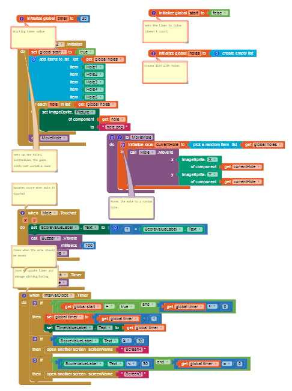

App Inventor Project
Computer Science Principles, 3 weeks from September 18, 2018 to October 5, 2018
In this project, a partner and I used MIT's AppInventor to create an Android app. My account stored our app, and most of my work was focused on programming. While developing the app, we kept a formal project notebook to document ideas and feedback. We both participated equally in the work, as our teacher was strict on how much of the work each of us does. During the project, some of the hardships that we ran into were when we tried to create a timer in the game. We discussed this problem for a long time, and eventually solved it by adding another timer in the program for the visible timer in the game. In this project, I learned that coding is a type of skill that involves trial and error and may sometimes create challenges. As a team, we learned how to pair program, share and get feedback from other students in my class, who represent other programmers. We learned that commenting and organization in the code structure is very important.
|  |

|

|
| Most of the code for our App Inventor app. | Design for the game screen in our app. | Feedback from classmates and instructions for our App Inventor game from our documentation. See full documentation... |
Python Image Manipulation Project
Computer Science Principles, 3 weeks from March 4, 2019 to March 24, 2019
In this project, a partner and I used the Python image manipulation modules PIL, numpy, and matplotlib to edit images which meet a goal. Also, we documented our work, partly by explaining our changes to each image and making an activity log. When we worked, I focused on the coding, while my partner focused on the project documentation. In this project, I learned specific ways that you can use RGB to change parts of an image, as well as more aspects of the modules we used. We also found that image manipulation is rigorous for both the programmer and the computer, as both need time to do their tasks. Thus, programmers need patience during image manipulation, as waiting for code to run and troubleshooting both take time. One of the challenges we had to solve was finding algorithms to change the color of a part of an image. Also, we had to patch parts of an image that were accidentally changed by other manipulations. While working as a team, we decided everyone's tasks and sometimes problem-solved as a pair.

|

|
|
| The initial image of the front of a computer that we decided to manipulate. | The final manipulated image of the front of the computer. | Array of images describing the manipulations we made for each image from our documentation. See full documentation... |
Mechanical Winch Project
Principles of Engineering, 2 weeks from October 14, 2019 to October 23, 2019
For this project, three other people and I worked on a physical model of a mechanical winch and a program using Netlogo of that winch, which is supposed to model that winch in terms of the behavior of the real-life winch. Also, a documentation describing the winch and program's functionality and development were required. The physical winch needs to have the ability to lift a mass of 100 grams for 30 centimeters. It also needs to be made of only VEX of FischerTech parts, and be powered by a FischerTech motor. The simulation of the winch must show how the size of the surface that the rope of the winch coils around and the voltage and amperage of the electrical power used to coil the rope of the winch affects the rate at which the cable of the winch coils and the angular speed of the surface in which the rope coils around. During this project, I mainly worked on the program that simulates the behavior of the winch, while I also worked a little bit on the physical prototype of the winch. I worked on all parts of the simulations, such as all of the variables affecting the speed at which the winch works on, and the background for the winch model in my simulation. On the project documentation, I included pictures of the code and interface for the program. I also made the project documentation's formatting neater and more consistant after all of my group members finished their parts of it.

|

|
|
| The interface for our Netlogo program. | Picture of our final physical prototype for our winch. | Final design sketch for our winch prototype as shown on the documentation. See full documentation... |
Renewable Insulation Project
Principles of Engineering, 2 weeks from February 4, 2020 to February 19, 2020
In this project, I designed an insulation material with a team of 3 other people. The insulation material had to be made out of completely renewable and biodegradable materials, such as wood, paper, and clay. We researched each material we used to better understand certain factors affecting their usefulness, such as its environmental impact and cost-effectiveness. On our project documentation, we described each material according to our research. One of my main roles in the project was to contribute a layer of magazine paper to our insulation material. For the magazine paper, I took several old magazines and cut them to a size that corresponds with that of other parts of our insulation. I then added a clay border around the sheets of magazine paper used for the insulation, so that the magazine paper stays together. Another major contribution I made in this project was performing calculations for values that describe the insulator's effectiveness. For example, using experimental data gathered when testing the insulator, I calculated the thermal conductivity constant, U-value, and R-value for my insulator. When I showed my calculations for my group to check, I made sure to see if everyone agreed and solve disputes if necessary. Even though everyone else agreed with another teammate's work, I found an error in her work and got her and the rest of my team to correct it. One of my challenges during this project was being neat and exact in my cutting of the magazine paper. When I tried cutting the magazine paper using a paper cutter, the paper cutter sometimes displaced the paper rather than cutting through it, even though I tried to cut fewer sheets of paper at a time. Still, to preserve the exactness of my cutting of the paper, I cut shorter cuts at a time to better preserve the exactness of my cuts. Whenever the paper cutter can not cut through the paper without displacing it, I used a pocket knife to cut the paper, so I can prevent displacing it.

|

|
|
| Picture of my team's insulation. | Side view of our insulation. | Diagram describing each layer of my team's insulation. See full documentation... |